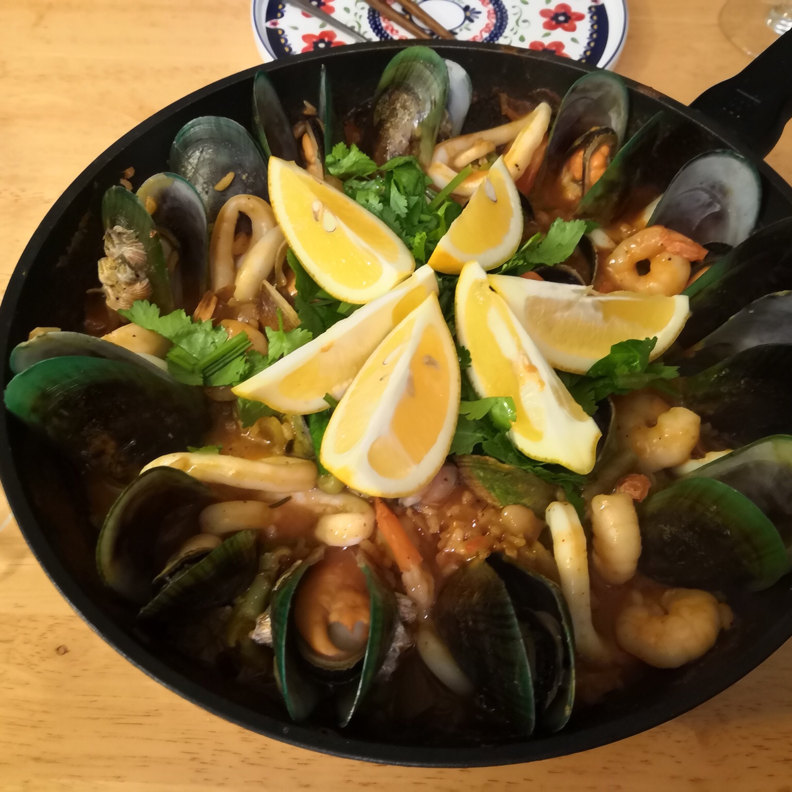

Paella

Paella is a classic Spanish dish of rice cooked with shellfish and seasoned with saffron. It is perfect for easy
entertaining.
Ingredients
- 2 tablespoons olive oil
- 1 onion, finely diced
- ½ tomato, finely diced
- 1 pinch salt
- ½ tablespoon smoked paprika
- 6 fresh romano or green beans
- ½ cup canned butter beans, drained and rinsed
- ½ cup white rice
- 6 large shrimp
- 6 mussels
- 6 clams
- 1 cup white wine
- 2 cups seafood stock
- 1 pinch saffron threads
- 1 teaspoon finely chopped fresh rosemary
- 1 cup fresh peas
- 5 baby squid, cut into rings and tentacles
- 1 lemon, cut into wedges
- 1 tablespoon chopped fresh flat-leaf parsley
Steps